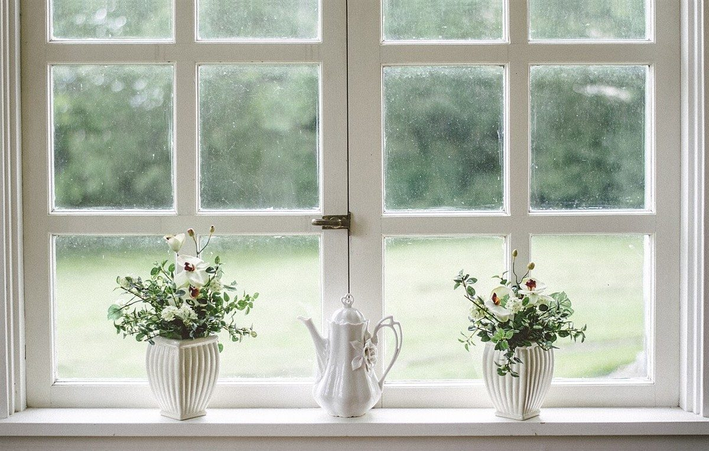

店のこと
六つの部位の配置図
お店の詳しい情報は準備中です。ここでは、制作側が考えたデザインの見かたをご紹介します。
制作側の連想
番号は、部位の番号
ホームの図にある1〜6の番号は、それぞれ部位の名前に対応します。制作側の連想で、お店の理念・由来とは無関係です。実際の機種の仕様を示すものでもありません。
1
アンテナ
伸び縮みして、ラジオの電波をつかまえるための細い棒。
2
チューナーダイヤル
針を動かして、聴きたい周波数に合わせるための目盛りの窓。
3
スピーカー
音を外へ出す、丸い網目の部分。左右にひとつずつ並ぶ。
4
カセット室
テープをセットする、ふた付きのくぼみ。
5
操作ボタン
再生・停止・早送りなどを押して切り替える、横並びのキー。
6
持ち手
本体の上に渡した、持ち運ぶための握り。
ギャラリー(イメージ)
コーヒー豆の写真


写真はコーヒー豆のイメージです。お店のものではありません。
ギャラリー(イメージ)
ポットとマグカップの写真


写真はイメージです。お店のものではなく、お店の設備や提供内容を示すものでもありません。